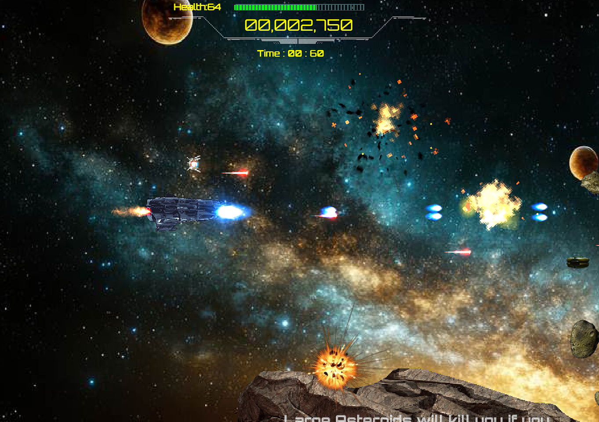
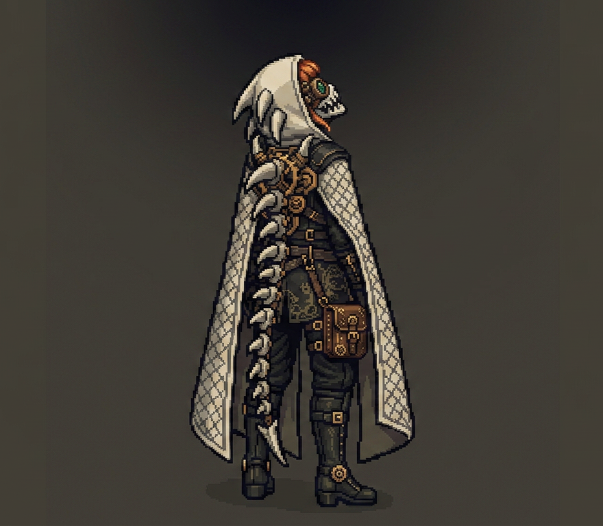

02 / 03＋ GAMETESTING
01
Star Talon
QA / GAMEPLAY ANALYSIS
PROFESSIONAL QA
FULL PROJECT ↗
A growing archive of systems, gameplay, QA, and player-experience work. The homepage highlights three projects; this page is where all projects are collectively located at.

02 / 03＋ GAMEQA / GAMEPLAY ANALYSIS

02 / 03＋ GAMESYSTEMS / PROTOTYPING
UX / FEATURE DESIGN